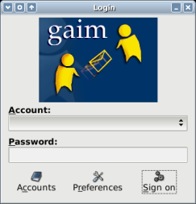
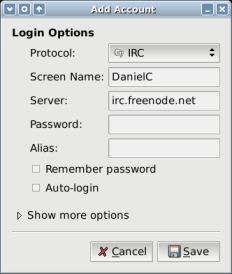
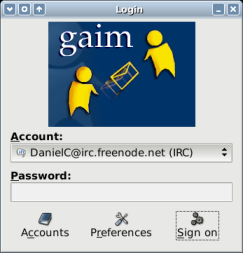
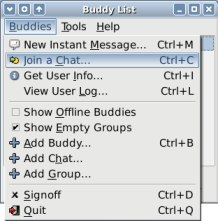
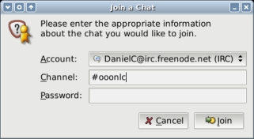
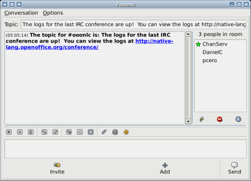

Get Started with IRC
Contents
Step 1: Install an IRC client
You need an IRC client. I recommed Gaim because it is easy to use, cross-platform and open source. Other popular choices include Chatzilla (cross-platform), X-Chat (only free for Unix/Linux), AdiumX (Mac OS X) and Fire (Mac OS X).
I will write instructions using Gaim.
Step 2: Initial setup (Gaim)
| (1) When you start Gaim, you will see a login dialog. |  |
|
(2) Click on Accounts. On the new window, click
on Add. You should see a third window like this one. |
 |
|
(3) Under Protocol select IRC.
The window will change (new entries appear, old entries disappear).
Under Server type in irc.freenode.net. Under Screen Name pick any name you like. It can only have letters, numbers and _under_scores_. No spaces allowed. Click "Save" and you're done. Note: If your name is already taken, you will have to pick a different one. |
 |
Step 3: Join the IRC chat (Gaim)
|
After the initial setup, you should see your newly created
account from the Account menu in the login window. Click on Sign on. |
 |
| You will see the Buddy List appear. Select Buddies > Join a Chat. |  |
| Under Channel, type #ooonlc (there is no password). Then click on Join. |  |
Congratulations!
You have now joined the IRC community and are ready to chat with your OOo friends.
